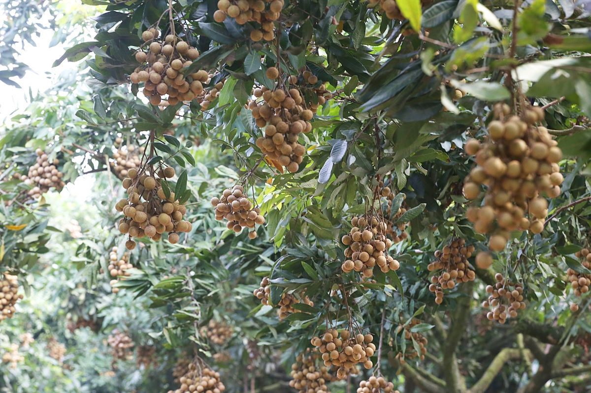

Năm nay, dịch Covid-19 bùng phát, đầu tháng 8, mẹ gọi điện báo mùa nhãn chín đã tới. Dịp này, nhiều địa phương thực hiện giãn cách xã hội để phòng chống dịch, nên mẹ sẽ không gửi nhãn cho tôi như mọi năm. Nghe mẹ nhắc đến vườn nhãn, bao ký ức tuổi thơ tôi lại ùa về. Năm nay, dịch Covid-19 bùng phát, đầu tháng 8, mẹ gọi điện báo mùa nhãn chín đã tới. Dịp này, nhiều địa phương thực hiện giãn cách xã hội để phòng chống dịch, nên mẹ sẽ không gửi nhãn cho tôi như mọi năm. Nghe mẹ nhắc đến vườn nhãn, bao ký ức tuổi thơ tôi lại ùa về.
 Nhãn lồng Hưng Yên
Vườn nhãn của gia đình đã đi qua quãng đời tuổi thơ tôi với rất nhiều kỷ niệm khó quên. Nào là những lần tôi cùng cha đào đất khơi gốc nhãn để bón phân chuồng, hay bắc thang cắt gội những cành nhãn già, cành khô cho cây ra nhiều lộc mới ở mùa sau. Rồi những dịp nắng hạn dài ngày, năm nào tôi cũng cùng mẹ gánh nước ở dưới ao lên tưới cho những gốc nhãn để chúng đủ độ ẩm nuôi cây, nuôi hoa, trái. Thế nhưng, đáng mong đợi hơn cả là khi vào mùa nhãn chín, mấy anh chị em chúng tôi tha hồ ăn nhãn.
Mùa nhãn chín thường trùng với khoảng thời gian nghỉ hè. Mấy anh chị em chúng tôi không phải tới trường nên có thể phụ giúp cha mẹ, ông bà thu hái nhãn để bán. Mỗi người một công việc. Cha tôi, anh cả tôi có sức khỏe thì đảm nhận phần việc trèo lên cây để bẻ nhãn. Còn ông bà, mẹ và mấy anh chị em chúng tôi ở dưới gốc đón những thúng nhãn từ trên cây cao truyền xuống. Sau đó phân loại, bó, buộc từng túm một với trọng lượng khoảng vài kg.
Những năm tôi còn bé, các gia đình trồng nhãn ở quê tôi đều phải tự bẻ nhãn rồi mang ra chợ bán. Thế nhưng, những năm sau này, người trồng nhãn quê tôi nhàn hạ hơn, khi thương lái tới tận vườn mua. Họ tự trèo lên cây bẻ nhãn xuống, sau đó mới cân tính tiền. Cũng có những gia đình bán cả vườn nhãn cho thương lái theo kiểu bán “vo”, nghĩa là ước lượng sản lượng của số cây nhãn rồi nhân ra tiền… Thực ra chuyện bán nhãn theo kiểu “vo” như vậy người nông dân thường chịu thiệt, nhưng vì gia đình neo người, sợ chim, dơi ăn hết nên họ phải bán theo hình thức này.